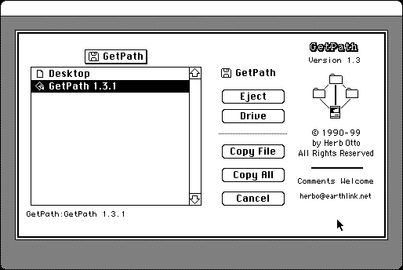

Download
GetPath-1.3.1.zip (8K) GetPath 1.3.1 repackaged into a zipped hfs disk image and checksum file. The disk image can be mounted with Mini vMac.
GetPath-1.3.1.sit (8K) GetPath 1.3.1 in the original format.
copyright: Herb Otto
mod date: Jan 30, 1999
license: free for non-commercial use
last known url
(gone)
Saves to clipboard path of selected file.

If you find these downloads useful, please consider helping the Gryphel Project, which hosts them.
Here are the md5 checksums for the downloads, signed with Gryphel Key 5:
--------- GRY SIGNED TEXT --------- f1f3c8ca4c7c82da99da9a88f6595a3b GetPath-1.3.1.zip c1d110452c6c06c7ae7f7d06a0b8f409 GetPath-1.3.1.sit ------- BEGIN GRY SIGNATURE ------- Gry/4Xa8CFcUzxdN/Jcp4oZqhlkxHV/RE0rELsPmDgq5YArUH3capdt0Cltr/+x+ +nnlNVBhF7x+jHliuqJHREpjIdoyWgxc79m/RnhKLjlpQZWqQw7vfgYZ1IrVIuaC pyeuxjWjzaFXjn3heSwGDlcwQiXbnv0Vh1s0J3tH0s5bbJfuiBaNbaQ+XIKtyQK2 -------- END GRY SIGNATURE --------